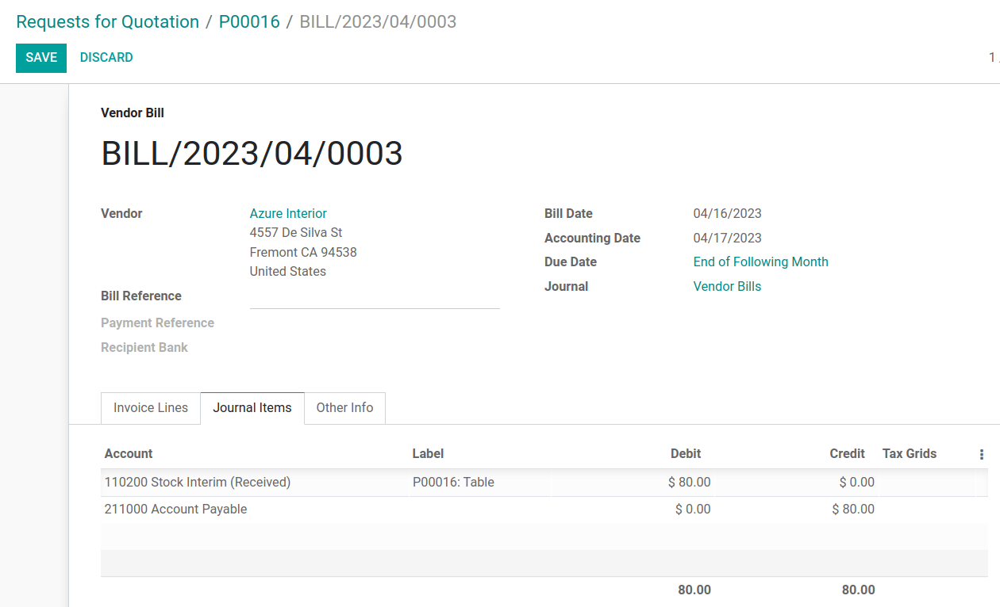

ผลตอบแทน ราคาเฉลี่ย¶
Average cost valuation (AVCO) is an inventory valuation method that evaluates cost based on the total cost of goods bought or produced during a period, divided by the total number of items on-hand. Inventory valuation is used to:
สะท้อนมูลค่าของสินทรัพย์ของบริษัท
ติดตามปริมาณของสินค้าที่ยังไม่ได้ขาย
ระบุมูลค่าเงินของสินค้าที่ยังไม่ได้ทำกำไร
รายงานปริมาณการขนส่งสินค้าตลอดไตรมาส
เพราะ #AVCO #ใช้ค่าเฉลี่ยถ่วงน้ำหนักเพื่อประเมินต้นทุนจึงเป็นวิธีที่ดีเหมาะสำหรับ บริษัท ที่ขายสินค้าแตกต่างกันเพียงเล็กน้อยปริมาณ. ใน Odoo การวิเคราะห์ต้นทุนนี้จะอัปเดตโดยอัตโนมัติทุกครั้งรับสินค้าเวลา
ดังนั้นเมื่อสินค้าถูกส่งคืนไปยังผู้ขาย Odoo จะทำงานโดยอัตโนมัติจัดทำรายการบัญชีเพื่อสะท้อนการเปลี่ยนแปลงในการประเมินมูลค่าสินค้าคงคลังแต่ Odoo ** จะไม่ ** อัปเดตอัตโนมัติ #AVCO # การคำนวณ,เพราะ: อ้าง: ซึ่งอาจไม่สอดคล้องกับสต็อกการประเมินราคา <สต็อก / ราคาเฉลี่ย / ออกจากสต็อก>
Note
เอกสารนี้แนะนำกรณีการใช้งานเฉพาะสำหรับวัตถุประสงค์ทางทฤษฎี Forสำหรับคำแนะนำเกี่ยวกับวิธีการตั้งค่าและใช้งาน #AVCO โปรดดูที่: doc:` ในสต็อกการกำหนดค่าการประเมินมูลค่า<../../../ investory_and_mrp / สินค้าคงคลัง / การจัดการผลิตภัณฑ์ / มูลค่าสินค้าคงคลัง / มูลค่าสินค้าคงคลัง _ config > `หมอ
See also
:doc:` ใช้การประเมินมูลค่าสินค้าคงคลัง<../../../ สินค้าคงคลัง _ และ _ mrp / สินค้าคงคลัง / ผลิตภัณฑ์ _ การจัดการ / สินค้าคงคลัง _ การประเมิน / การใช้ _ สินค้าคงคลัง _ การประเมิน > `
:ref:` วิธีการประเมินมูลค่าสินค้าคงคลังอื่น ๆ<สินค้าคงคลัง / คลังสินค้า _ การจัดเก็บ / การคำนวณต้นทุน _ วิธีการ>
การกำหนดค่า¶
หากต้องการใช้การประเมินมูลค่าสินค้าคงคลังต้นทุนเฉลี่ยสำหรับผลิตภัณฑ์โปรดไปที่: menusesection:`stock --> configuration --> หมวดหมู่สินค้า ' และเลือกหมวดหมู่ที่จะใช้ #AVCO ในหน้าหมวดหมู่สินค้าตั้ง: guilabel: "วิธีการคำนวณต้นทุน" เป็น "ค่าใช้จ่ายเฉลี่ย (AVCO)" และ: guilabel: เปลี่ยน "การประเมินมูลค่าสินค้าคงคลัง" เป็น "อัตโนมัติ"
See also
: doc:` การกำหนดค่าสต็อก<../../../ investory_and_mrp / สินค้าคงคลัง / การจัดการผลิตภัณฑ์ / มูลค่าสินค้าคงคลัง / มูลค่าสินค้าคงคลัง _ config > `
ใช้การประเมินต้นทุนเฉลี่ย¶
วิธีต้นทุนเฉลี่ยจะปรับการประเมินมูลค่าสินค้าคงคลังเมื่อสินค้ามีคุณสมบัติตรงตามเงื่อนไขต่อไปนี้ได้รับในคลังสินค้า ในส่วนนี้จะอธิบายวิธีการทำงาน แต่หากคำอธิบายไม่จำเป็นข้ามไปที่: อ้าง:` กลับไปที่กรณีการใช้งานของผู้ให้บริการ<สินค้าคงคลัง / ค่าใช้จ่ายเฉลี่ย / ผลตอบแทน> ส่วน
สูตร¶
เมื่อสินค้าใหม่มาถึงค่าใช้จ่ายเฉลี่ยใหม่ของแต่ละผลิตภัณฑ์คือคำนวณใหม่โดยใช้สูตรต่อไปนี้:
** ปริมาณเก่า **: จำนวนสินค้าในสต็อกก่อนที่จะได้รับการจัดส่งใหม่
** ค่าใช้จ่ายเฉลี่ยเก่า **: ตามการประเมินมูลค่าสินค้าคงคลังก่อนหน้านี้
** ปริมาณการให้อาหาร **: ปริมาณของผลิตภัณฑ์ที่จัดส่งใหม่
** ราคาซื้อ **: ราคาโดยประมาณเมื่อได้รับสินค้า(เนื่องจากบิลซัพพลายเออร์อาจมาถึงในภายหลัง) จำนวนเงินดังกล่าวไม่เพียงครอบคลุมราคาสินค้า แต่ยังเพิ่มต้นทุน เช่น ค่าขนส่ง ภาษี และ: อ้าง:` ต้นทุน CIF <สินค้าคงคลัง / รายงาน / ต้นทุน CIF> ในงานเลี้ยงต้อนรับการเรียกเก็บเงินของผู้ขายราคานี้ได้รับการปรับ;
** ปริมาณสุดท้าย **: ปริมาณสต็อกที่มีอยู่หลังจากการโอนสต็อก
Important
ค่าใช้จ่ายเฉลี่ย**ไม่เปลี่ยนแปลงเมื่อผลิตภัณฑ์ออกจากคลังสินค้าอ่านว่าทำไมการประเมินมูลค่าต้นทุนเฉลี่ย ** ไม่มี ** การปรับ: อ้างอิง: `ที่นี่<สต็อก / ราคาเฉลี่ย / ออกจากสต็อก>
คำนวณต้นทุนเฉลี่ย¶
เพื่อให้เห็นว่าต้นทุนเฉลี่ยของสินค้าเปลี่ยนแปลงไปตามการจัดส่งแต่ละครั้งอย่างไรพิจารณาการดำเนินการคลังสินค้าและการเคลื่อนย้ายสินค้าคงคลังในตารางด้านล่าง แต่ละนี่เป็นตัวอย่างที่แตกต่างออกไปว่าการประเมินมูลค่าต้นทุนเฉลี่ยได้รับผลกระทบอย่างไร
การดำเนินงาน |
มูลค่าขาเข้า |
มูลค่าหุ้น |
จำนวนที่มีอยู่ |
ค่าใช้จ่ายเฉลี่ย |
|---|---|---|---|---|
$0 |
0 |
$0 |
||
รับ 8 โต๊ะ ในราคาชุดละ 10 เหรียญสหรัฐฯ |
8 * $10 |
$80 |
8 |
$10 |
รับ 4 โต๊ะ ในราคา 16USD / หน่วย |
4 * $16 |
$144 |
12 |
$12 |
จัดส่งโต๊ะ 10 ตัว |
-10 * $12 |
$24 |
2 |
$12 |
Exercise
ตรวจสอบให้แน่ใจว่าเข้าใจการคำนวณข้างต้นโดยดูต่อไปนี้ #$10 ต่อโต๊ะ
ในขั้นต้น, สินค้าคงคลังเป็น 0, ดังนั้นมูลค่าทั้งหมดจะเป็น $0.
ในการดำเนินงานคลังสินค้าครั้งแรกได้รับ "8" โต๊ะละ "10 ดอลลาร์" นี่การใช้ต้นทุนเฉลี่ย: อ้าง: การคำนวณสูตร<สินค้าคงคลัง / ค่าใช้จ่ายเฉลี่ย / สูตร> `:
เนื่องจาก * ปริมาณการให้อาหาร* ของตารางคือ "8" * ราคาซื้อ* ของตารางคือคนละ 10 เหรียญ
มูลค่าสินค้าคงคลังในโมเลกุลจะถูกประเมินเป็น "80 ดอลลาร์"
`80 ดอลลาร์หารด้วยจํานวนโต๊ะทั้งหมดที่จะเก็บ 8 ดอลลาร์
`10$ เป็นค่าใช้จ่ายเฉลี่ยของตารางจากการจัดส่งครั้งแรก
หากต้องการตรวจสอบใน Odoo สั่งซื้อใหม่ "8" ในแอป *Purchase*ผลิตภัณฑ์นี้มีชื่อว่า "โต๊ะ" ซึ่งไม่มีการเปลี่ยนแปลงสินค้าคงคลังก่อนหน้านี้ ราคาชิ้นละ "10 ดอลลาร์"
ในตาราง: guilabel: "หมวดหมู่สินค้า" ฟิลด์: guilabel: "สากล"ในแท็บ "ข้อมูล" ของแบบฟอร์มผลิตภัณฑ์คลิกที่: guilabel:` ➡️ (ลูกศร) ไอคอน,เปิด: guilabel: "ลิงก์ภายนอก" เพื่อแก้ไขหมวดหมู่สินค้า การตั้งค่า: guilabel: "วิธีการคำนวณต้นทุน" เป็น "ต้นทุนเฉลี่ย (AVCO)" และ: guilabel: "สต็อก"การประเมินมูลค่า "อัตโนมัติ"
จากนั้น ส่งกลับไปให้ใบสั่งซื้อ คลิก: guilabel: "ยืนยันการสั่งซื้อ" ตามด้วยคลิก: guilabel: "รับสินค้า" เพื่อยืนยันการรับสินค้า
ถัดไปตรวจสอบบันทึกการประเมินมูลค่าสินค้าคงคลังที่สร้างขึ้นโดยสินค้ารับโดยไปที่: ส่วนเมนู: `สินค้าคงคลัง -> รายงาน ->การประเมินมูลค่าสินค้าคงคลัง เลือกเมนูแบบเลื่อนลง "ตาราง" และดู: guilabel: * คอลัมน์ "มูลค่ารวม" สำหรับชั้นประเมินราคา * (:dfn:`ในสต็อกการประเมินมูลค่า ณ เวลาที่กำหนด = จำนวนที่มีอยู่ * ราคาต่อหน่วย") นี่8 โต๊ะในสต็อกมีค่า $80

Tip
เมื่อหมวดหมู่สินค้า: guilabel: "วิธีการคำนวณต้นทุน" ถูกตั้งค่าเป็น: guilabel: "AVCO" จากนั้นค่าใช้จ่ายเฉลี่ยของผลิตภัณฑ์จะแสดงในภายใต้: guilabel: ข้อมูลทั่วไปแท็บ: guilabel: ค่าใช้จ่ายฟิลด์,ในหน้าผลิตภัณฑ์
การจัดส่งสินค้า (กรณีการใช้งาน)¶
สำหรับสินค้าที่ออกจากคลังสินค้า: อ้าง:`คู่ผลิตภัณฑ์ที่ออกจากคลังสินค้าการประเมินต้นทุนเฉลี่ย <สินค้าคงคลัง / avg_cost/definite_rule> แม้ว่าไม่มีการคำนวณมูลค่าต้นทุนเฉลี่ยใหม่,มูลค่าสินค้าคงคลังยังคงอยู่เนื่องจากมีการนำสินค้าออกจากสต๊อกและส่งมอบให้สถานที่ตั้งของลูกค้า
Exercise
เพื่อพิสูจน์ว่าการประเมินมูลค่าต้นทุนเฉลี่ยไม่มีการคำนวณใหม่ ให้ตรวจสอบtheตัวอย่าง
เนื่องจากมีการส่งโต๊ะให้ลูกค้าจำนวน 10 โต๊ะ,*จำนวนที่ได้รับ*มันคือ "-10" ใช้ค่าใช้จ่ายเฉลี่ยก่อนหน้า (" $ 12") แทนค่าใช้จ่ายของผู้ให้บริการ*ราคาซื้อ *;
The incoming inventory value is
-10 * $12 = -$120;เก่า * มูลค่าสินค้าคงคลัง * ($ 144) ถูกเพิ่มเข้าไปใน * สินค้าคงคลังมูลค่า * (" - 120 USD") ดังนั้น "144 USD + - 120 USD = 24 USD";
หลังจากขนโต๊ะ "10" ออกจาก "12" จะเหลือเพียง "2" โต๊ะ ดังนั้นปัจจุบัน * มูลค่าสินค้าคงคลัง * ("$24") หารด้วยปริมาณที่มีอยู่ ("2")
$ 24/2 = 12ซึ่งเท่ากับค่าใช้จ่ายเฉลี่ยของการผ่าตัดก่อนหน้านี้
หากต้องการตรวจสอบใน Odoo ให้ขายตาราง "10" ในแอป * Sales * ยืนยันจัดส่งแล้วดูบันทึกการประเมินมูลค่าสินค้าคงคลังโดยการเข้า: เมนู: "สินค้าคงคลัง -> รายงาน -> การประเมินมูลค่าสินค้าคงคลัง" ใน theชั้นบนสุดของการประเมินมูลค่าที่ให้ "10" ตารางจะลดมูลค่าของผลิตภัณฑ์ลบ $120
หมายเหตุ: สิ่งที่ไม่ปรากฏในบันทึกการประเมินมูลค่าหุ้นนี้รายได้จากการขายครั้งนี้ การลดลงครั้งนี้จึงไม่ใช่การขาดทุนของบริษัท

คืนสินค้าให้กับผู้ขาย (กรณีการใช้งาน)¶
เนื่องจากราคาที่จ่ายให้ผู้ค้าอาจแตกต่างจากราคาสินค้าOdoo ใช้วิธีการ AVCO เพื่อจัดการกับรายการที่ส่งคืนทาง
สินค้าถูกส่งคืนไปยังซัพพลายเออร์ในราคาซื้อเดิมอย่างไรก็ตาม
การประเมินมูลค่าต้นทุนภายในยังคงเดิม
ด้านบน: อ้าง:` ตารางตัวอย่าง <สินค้าคงคลัง / avg_cost / math_table> ` อัปเดตเป็นติดตาม:
การดำเนินงาน |
ปริมาณ * ค่าใช้จ่ายเฉลี่ย |
มูลค่าหุ้น |
จำนวนที่มีอยู่ |
ค่าใช้จ่ายเฉลี่ย |
|---|---|---|---|---|
$24 |
2 |
$12 |
||
กลับไป 1 โต๊ะ ที่ซื้อมาในราคา $10 |
-1 * $12 |
$12 |
1 |
$12 |
กล่าวอีกนัยหนึ่ง Odoo เชื่อว่าผลตอบแทนของผู้ให้บริการเป็นอีกรูปแบบหนึ่งสินค้าที่ออกจากโกดัง สำหรับ Odo เพราะโต๊ะนี้มีมูลค่า $ 12มูลค่าสินค้าคงคลังจะลดลง $ 12 เมื่อสินค้าถึง $ 12 ต่อหน่วยผลตอบแทน; ราคาซื้อเดิม "$ 10" ไม่เกี่ยวข้องกับราคาของตารางค่าใช้จ่ายเฉลี่ย
Example
หากต้องการคืนโต๊ะที่ซื้อในราคา "$ 10" ให้ไปที่* ในสต็อก * ใบเสร็จรับเงินที่ซื้อในแอปสำหรับการออกกำลังกาย: อ้าง: `8 ตาราง1 <สินค้าคงคลัง / avg_cost / ex-1> `โดยไปที่: guilabel: `ภาพรวมสินค้าคงคลัง',คลิกที่: guilabel: "ใบเสร็จรับเงิน" และเลือกใบเสร็จรับเงินที่ต้องการ
จากนั้นคลิก: guilabel: return' บนใบสั่งจัดส่งที่ตรวจสอบแล้วและแก้ไขตั้งจำนวนเป็น "1" ในหน้าต่างการส่งข้อมูลย้อนกลับ สิ่งนี้สร้างการเปิดเผยสินค้าบนโต๊ะ เลือก: guilabel: `Validate เพื่อยืนยันขาออกการจัดส่งสินค้า
กลับไปที่: เมนู: `สินค้าคงคลัง -> รายงาน -> การประเมินมูลค่าสินค้าคงคลังดูว่าสินค้าที่ออกจากคลังสินค้าสามารถลดมูลค่าสินค้าคงคลังได้ $ 12 อย่างไร

กำจัดข้อผิดพลาดในการประเมินมูลค่าหุ้นในผลิตภัณฑ์ที่จัดส่ง¶
เมื่อค่าใช้จ่ายเฉลี่ยไม่สอดคล้องกับสินค้าคงคลังของบริษัท อาจเกิดความไม่สอดคล้องกันในสินค้าคงคลังของบริษัทคำนวณมูลค่าการจัดส่งใหม่
เพื่อแสดงให้เห็นถึงข้อผิดพลาดนี้ตารางด้านล่างแสดงฉากที่ 1มีการส่งโต๊ะให้ลูกค้าและอีกโต๊ะถูกส่งคืนให้กับผู้จำหน่ายราคาซื้อ
การดำเนินงาน |
ปริมาณ * ราคา |
มูลค่าหุ้น |
จำนวนที่มีอยู่ |
ค่าใช้จ่ายเฉลี่ย |
|---|---|---|---|---|
$24 |
2 |
$12 |
||
จัดส่งสินค้า 1 ชิ้นให้กับลูกค้า |
-1 * $12 |
$12 |
1 |
$12 |
ส่งคืนสินค้า 1 ชิ้นที่ซื้อมาในราคา $10 |
-1 * $10 |
$2 |
0 |
$12 |
ในการดำเนินการขั้นสุดท้ายที่กล่าวมาข้างต้นสินค้าคงคลังสุดท้ายของตารางจะถูกประเมินเป็น$2 แม้ว่าจะมีโต๊ะ "0" เหลืออยู่ในสต็อก
วิธีการที่ถูกต้อง
ใช้ต้นทุนเฉลี่ยในการประเมินผลตอบแทน ไม่ได้หมายความว่าบริษัทฯรับเงินคืน $ 12 เมื่อซื้อ $ 10; รายการที่ส่งคืนในราคา $ 10 มีค่าราคาภายในคือ $ 12 การเปลี่ยนแปลงมูลค่าสินค้าคงคลังแสดงถึงผลิตภัณฑ์ที่มีมูลค่า $ 12ไม่นับรวมอยู่ในทรัพย์สินของบริษัทอีกต่อไป
แองโกลแซกซอนบัญชี¶
นอกเหนือจากการใช้ #AVCO #, บริษัท ที่ใช้ ** แองโกลแซกซอนบัญชี **และเก็บบัญชีการถือครองไว้เพื่อติดตามจำนวนเงินที่จ่ายให้กับผู้ค้าเมื่อซัพพลายเออร์ส่งมอบคำสั่งซื้อแล้ว ** มูลค่าสินค้าคงคลัง ** จะขึ้นอยู่กับราคาผู้จำหน่ายสินค้าที่เข้าสต๊อกแล้ว โฮลดิ้งบัญชี (เรียกว่า ** การป้อนสินค้าคงคลัง **) จะถูกเครดิตเฉพาะในได้รับบิลจากผู้ขาย
See also
: อ้าง:` แองโกลแซกซอนวีคอนติเนนตัล <สินค้าคงคลัง / คลังสินค้า _ การจัดเก็บ / การบัญชี -ประเภท > `
ตารางด้านล่างสะท้อนให้เห็นถึงรายการบันทึกประจำวันและบัญชี * ป้อนสินค้าคงคลัง *เมื่อบิลของผู้ค้ามียังไม่ได้รับ บัญชียอดคงเหลือเมื่อส่งคืนสินค้าที่มีลักษณะดังต่อไปนี้สินค้า**มูลค่า**ราคาซื้อ สร้างบัญชี "สเปรด"
การดำเนินงาน |
ป้อนสต็อก |
ความแตกต่างของราคา |
มูลค่าหุ้น |
จำนวนที่มีอยู่ |
ค่าใช้จ่ายเฉลี่ย |
|---|---|---|---|---|---|
$0 |
0 |
$0 |
|||
รับ 8 โต๊ะในราคา $10 |
($80) |
$80 |
8 |
$10 |
|
รับใบเรียกเก็บเงินจากผู้ให้บริการ $ 80 |
$0 |
$80 |
8 |
$10 |
|
รับ 4 โต๊ะ ราคา $16 |
($64) |
$144 |
12 |
$12 |
|
ได้รับใบเรียกเก็บเงินของผู้ขาย $ 64 |
$0 |
$144 |
12 |
$12 |
|
จัดส่งโต๊ะให้ลูกค้า 10 โต๊ะ |
$0 |
$24 |
2 |
$12 |
|
กลับไปที่โต๊ะ 1 ตัวที่ซื้อมาในราคา $ 10 |
$10 |
$2 |
$12 |
1 |
$12 |
ได้รับเงินคืนจากผู้ขาย $10 |
$0 |
$2 |
$12 |
1 |
$12 |
การรับสินค้า¶
บทสรุป¶
เมื่อรับสินค้า Odoo มั่นใจได้ว่าบริษัทจะสามารถชำระเงินได้ซื้อโดยการโอนเงินล่วงหน้าตามจำนวนที่ตรงกับราคาที่ได้รับการโอนสินค้าไปยัง: doc:บัญชีความรับผิดชอบ</ แอป / การเงิน / บัญชี / เริ่มต้น / โกงตาราง>,** หุ้นป้อน** จากนั้นเมื่อได้รับใบแจ้งหนี้แล้วจำนวนเงินที่ถืออยู่บัญชีถูกโอนไปยัง * เจ้าหนี้ * โอนเข้าบัญชีนี้แสดงว่ามีการชำระบิลแล้ว** หลังจากที่ผู้ขายได้ตรวจสอบรายการสินค้าคงคลังแล้ว**ได้รับบิลแล้ว
การประเมินมูลค่าสินค้าคงคลังเป็นวิธีการคำนวณปริมาณสินค้าคงคลังแต่ละประเภทสินค้ามีมูลค่าภายใน เนื่องจากมีความแตกต่างของราคาสินค้าราคาประเมิน ** ราคาจริง**** สำหรับการซื้อ ** การประเมินมูลค่าสินค้าคงคลัง ** บัญชีกับ** การป้อนสินค้าคงคลัง ** การดำเนินการเครดิตและหักบัญชีของคุณ
เพื่อให้เป็นแนวคิดทั้งหมดนี้ทำตามส่วนต่อไปนี้
ยอดเงินในบัญชีเมื่อได้รับสินค้า¶
ในตัวอย่างนี้ มีบริษัทแห่งหนึ่งในหุ้น จากนั้นได้รับตารางจากผู้จัดจำหน่าย 8 แผ่น:
** การป้อนสินค้าคงคลัง ** บัญชีเครดิต "80 ดอลลาร์" ที่ค้างชำระกับผู้ขาย นี่จำนวนเงินในบัญชีนี้ไม่เกี่ยวข้องกับมูลค่าสินค้าคงคลัง
`ตารางมูลค่า $ 80 ปรากฏบน ** (** หักบัญชี ** มูลค่าสินค้าคงคลัง * บัญชี`80 ดอลลาร์) และ
`ต้องจ่าย $ 80 สำหรับสินค้าที่ได้รับ ** (** เครดิต ** รายการในสต็อก *บัญชี "80 ดอลลาร์")
ใน Odo¶
Odoo สร้างรายการบัญชีรายวันเมื่อใช้การจัดส่งของ AVCOได้รับวิธีการคำนวณต้นทุน การกำหนดค่า a: guilabel: สเปรดโดยเลือก: guilabel: ➡️ (ลูกศร)`ถัดจากไอคอน: guilabel: ฟิลด์ "หมวดหมู่สินค้า" บนหน้าสินค้า
ภายใต้: guilabel:` คุณสมบัติบัญชี ', สร้างใหม่: guilabel:` ราคาโดยพิมพ์ชื่อบัญชีและคลิก:guilabel:` สร้างและแก้ไข จากนั้นตั้งค่าบัญชี: guilabel:`type`เป็น`ใช้จ่ายและคลิก: guilabel: บันทึก

จากนั้นรับสินค้าใน *Buy*App หรือ *Stock*App และไปที่: ส่วนเมนู: `Accounting Application -> Accounting -> Journalรายการ `. ในรายการพบตรงกับ: guilabel:`อ้างอิง`การดำเนินการรับคลังสินค้าสำหรับผลิตภัณฑ์ที่เกี่ยวข้อง

คลิกที่บรรทัดเพื่อดู 8 ตาราง แสดงรายการบัญชีรายวันนี้บัญชี "การประเมินมูลค่าหุ้น" เพิ่มขึ้นหลังจากได้รับแบบฟอร์ม 8 แบบ`$80`. แทน ** ป้อนสินค้าคงคลัง ** บัญชี (ตั้งค่าเป็น "ระยะกลางของสินค้าคงคลัง"(ได้รับแล้ว) "บัญชีเริ่มต้น" จะถูกโอนไปยัง "80 USD"

ยอดคงเหลือในบัญชีเมื่อได้รับใบเรียกเก็บเงินจากผู้ขาย¶
ในตัวอย่างนี้ มีบริษัทแห่งหนึ่งในหุ้น จากนั้นได้รับโต๊ะจากผู้ค้าจำนวน 8 โต๊ะ เมื่อการเรียกเก็บเงินเป็นรับ 8 โต๊ะจากผู้ขาย:
ชำระบิลด้วย "$80" ในบัญชี ** การป้อนสินค้าคงคลัง ** นี้จะถูกยกเลิกบัญชีตอนนี้ถือ "0 ดอลลาร์"
การหักบัญชี ** การป้อนสินค้าคงคลัง ** "$80" (สำหรับการปรองดองบัญชีนี้)
เครดิต ** เจ้าหนี้ ** "80 ดอลลาร์" บัญชีนี้จัดเก็บจำนวนเงินดังต่อไปนี้บริษัทเป็นหนี้คนอื่น ดังนั้นนักบัญชีจึงใช้เงินนี้เพื่อให้ผู้ขาย
ใน Odo¶
เมื่อผู้ให้บริการร้องขอการชำระเงินไปที่: menuse ส่วน: ซื้อapp -> สั่งซื้อ -> ซื้อและเลือก: ตัวย่อ: "PO (ใบสั่งซื้อ)"8 โต๊ะ ใน: abbr: PO (ใบสั่งซื้อ) , เลือก: guilabel: สร้างบิล
สลับไปที่: guilabel: แท็บ "Diary Items" เพื่อดูวิธีการโอนเงิน "$80"ตั้งแต่บัญชีที่ถือครอง "ระยะเวลาสินค้าคงคลัง (เรียกเก็บ)" ไปจนถึง "เจ้าหนี้": guilabel: "ยืนยัน" ใบเรียกเก็บเงินเพื่อบันทึกการชำระเงินไปยังผู้ขาย
เมื่อส่งสินค้าแล้ว¶
ใน: อ้าง:` ตัวอย่างตารางข้างต้น <สต็อก / avg _ ราคา / รายการราคา> `เมื่อ 10เมื่อสินค้าถูกส่งถึงมือลูกค้า,** ใส่สินค้าคงคลัง ** บัญชีคือไม่ได้รับผลกระทบเนื่องจากไม่มีผลิตภัณฑ์ใหม่ออกสู่ตลาด พูดง่ายๆ:
** การประเมินมูลค่าสินค้าคงคลัง ** เครดิต "$ 120" ลบออกจากสต็อกการประเมินมูลค่าแสดงถึงมูลค่าของผลิตภัณฑ์ที่ออกจากบริษัท 120 ดอลลาร์
หักบัญชี ** ลูกหนี้ ** เพื่อบันทึกรายได้จากการขาย
ในรายการบันทึกประจำวันทางบัญชีที่ออกใบแจ้งหนี้ให้กับลูกค้า 10 รายการลูกหนี้ ** การขายสินค้า ** ภาษีเงินได้ ** และ ** ลูกหนี้ ทั้งหมดนี้เกี่ยวข้องกับการขายสินค้า ลูกหนี้ ** ใช่บัญชีที่รับชำระเงินจากลูกค้า
บัญชีแองโกลแซกซอนยืนยันต้นทุนการขาย (COGS) ในกรณีต่อไปนี้การขายเสร็จเรียบร้อยแล้ว ดังนั้น ก่อนที่สินค้าจะถูกขาย ถูกทิ้ง หรือถูกส่งคืน ต้นทุนไม่ได้คำนึงถึงปัญหาการกักตุนสินค้า **ค่าธรรมเนียม **บัญชีนี้หักบัญชี "$120" เพื่อบันทึกค่าใช้จ่ายของการจัดเก็บ 10 ตารางในช่วงเวลานี้สักพัก
เมื่อสินค้าถูกส่งคืน¶
ใน: อ้าง:` ในตารางตัวอย่างข้างต้น <สต็อก / avg _ ราคา / รายการราคา> เมื่อคืนผลิตภัณฑ์ 1 ชิ้นให้กับซัพพลายเออร์ที่ซื้อในราคา "$ 10" และ บริษัท คาดว่าจะเป็น "$ 10"ในบัญชี ** เจ้าหนี้ ** ของผู้ขาย อย่างไรก็ตาม ** สินค้าคงคลังป้อน ** บัญชีต้องหักบัญชี "$ 12" เนื่องจากค่าใช้จ่ายเฉลี่ยคือ $ 12เวลากลับ หายไป "$ 2" ใน: guilabel: "บัญชีสเปรด" ในผลิตภัณฑ์: guilabel: "หมวดหมู่สินค้า"
Note
พฤติกรรมของบัญชีสเปรด*จะแตกต่างกันไปตามการแปลเป็นภาษาท้องถิ่น ในนี้ในกรณีนี้บัญชีถูกออกแบบมาเพื่อจัดเก็บราคาซัพพลายเออร์และ อัตโนมัติ * วิธีการประเมินมูลค่าสินค้าคงคลัง
สรุป:
เดบิต ** การป้อนสินค้าคงคลัง ** บัญชี "$10" ย้ายแบบฟอร์มจากสต็อกหนึ่งไปยังอีกสต็อกหนึ่งป้อนข้อมูล การย้ายครั้งนี้เพื่อแสดงให้เห็นว่าตารางจะถูกประมวลผลการจัดส่งสินค้า
Debit ** ใส่สินค้าคงคลัง ** เพิ่ม "$ 2" ในการคำนวณ ** ราคาความแตกต่าง**
เครดิต ** การประเมินมูลค่าหุ้น ** "$ 12" เนื่องจากสินค้ากำลังจะออกจากหุ้น

เมื่อได้รับเงินคืนจากผู้ค้าแล้ว
เครดิต ** ใส่สินค้าคงคลัง ** บัญชี "$10" เพื่อปรับราคาในตาราง
การหักบัญชี ** เจ้าหนี้ ** "$ 10" ให้นักบัญชีเรียกเก็บเงินลงทะเบียนการจ่ายเงินในบันทึกประจำวันของพวกเขา